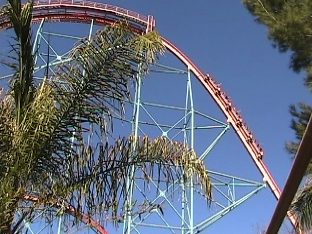
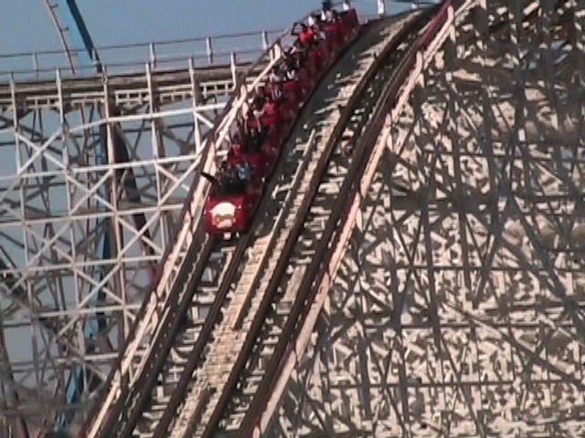
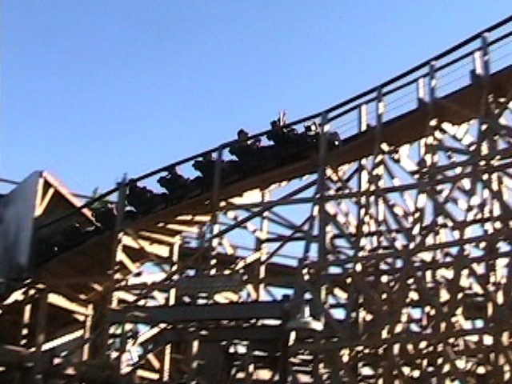
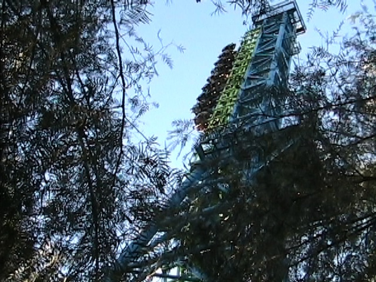

Fall 2009 Photos
Disneyland Resort Knotts Berry Farm Six Flags Magic Mountain
The final park on the trip, was Six Flags Magic Mtn. Now this part of Fall 2009 Photos is a little different than usual as this day takes place in NOVEMBER!!!! The reason I could not get to Six Flags Magic Mtn in October was because I was so damn busy with Cross Country, Visiting Colleges, Getting Swine Flu, and of course, the Disneyland and Knotts part of Fall 2009 Photos. Anyways, here we are at Six Flags Magic Mtn the day after halloween.
Anyways, it's still great to be soaking more bastards on Log Jammer. To see a complete video of the bastards we've soaked on Log Jammer, click here.
Well our first ride of the day was Goliath. (And here's a painting of Goliath's station I've never seen before until today.)

Until today, I never realized how awesome Goliath in the front seat was. The amount of wind in my face was simply awesome. (Oh yeah, I forgot to mention that SFMM was EMPTY today.)
Ahh! The water!!! It burns!!!!
 Ok, Here's a funny story about Superman. At first it was going very high, but then when I was talking to Cody over by Food Etc, I noticed that Superman went REALLY FREAKING LOW!!! I mean, it probably only went up 25 feet above the ground. (I really wish I had filmed it.) Then after discussing it with Cody, we saw that the car had stopped RIGHT IN FRONT OF THE FREAKING TOWER!!!! And guess what else, we ended up riding Superman later that night!
Ok, Here's a funny story about Superman. At first it was going very high, but then when I was talking to Cody over by Food Etc, I noticed that Superman went REALLY FREAKING LOW!!! I mean, it probably only went up 25 feet above the ground. (I really wish I had filmed it.) Then after discussing it with Cody, we saw that the car had stopped RIGHT IN FRONT OF THE FREAKING TOWER!!!! And guess what else, we ended up riding Superman later that night!

Well, I may not have made it on Collosus Backwards this year, but I still had a nice ride on Collosus today.
 Up next, Scream. It was fun. Nuff said.
Up next, Scream. It was fun. Nuff said.
Breaking News on Incrediblecoasters!!! Wii Sports Resrot is a completley awesome game!!! I'm so getting this for my Wii.

While it was great to see such a short line for Terminator, it was really annoying to be forced to watch the preshows when there's nobody riding Terminator in the station. Please fix that Six Flags.
"Grr! I'm crazy Cody. I'm turning into a Terminator because I'm not cool enough to be a human being. Gimme some candy!!! I know you have some!!! Halloween was YESTERDAY for crying out loud!!!!"

After Terminator, we rode DejaVu. Because that is a truely awesome Boomerang.
 Don't even think about murdering my cell phone!!! I already lost my still camera to Silver Bullet.
Don't even think about murdering my cell phone!!! I already lost my still camera to Silver Bullet.
 We also got on Tatsu many times due to the lack of crowds. (Which was very awesome.)
We also got on Tatsu many times due to the lack of crowds. (Which was very awesome.)
 Time to ride Hair Gel the Ride.
Time to ride Hair Gel the Ride.
Thank you Six Flags. Now in the event of needing Hair Gel, I'll be sure to NOT buy Got2B Hair Gel.
 Incrediblecoasters is not responsible for any eye damage caused by this picture of Hair Gel the Ride's trains.
Incrediblecoasters is not responsible for any eye damage caused by this picture of Hair Gel the Ride's trains.
 You know, I've heard of people getting lice in their hair. But I have NEVER heard of anyone have vipers in their hair.
You know, I've heard of people getting lice in their hair. But I have NEVER heard of anyone have vipers in their hair.
Hey Six Flags!!! Please come fix your shower!! I am very dirty and need a shower NOW!!!!!
After riding Canyon Blaster, we will have ridden EVERY coaster in SFMM today!!! (With the exception of Percy.)
 You didn't seriously think we would skp X2 on a day this empty!!!!
You didn't seriously think we would skp X2 on a day this empty!!!!
If you want proof of the emptiness, this is X2's line!!! We managed to get 8 rides in 1 hour, making it our greatest X2 Marathon since Westcoast Bash 2007! And an X2 Marathon is also the perfect way to end this fairly big update. Hope you enjoyed reading it.
Home